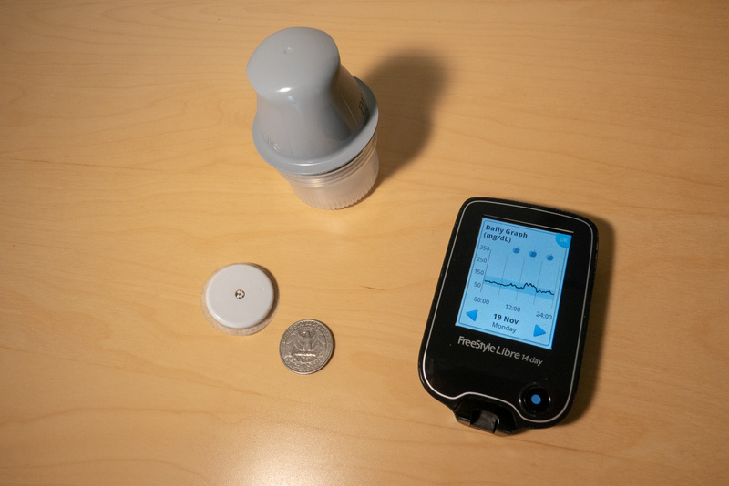
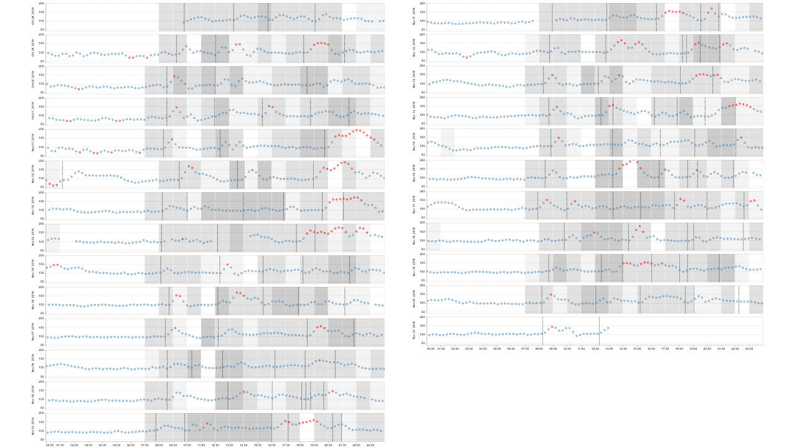
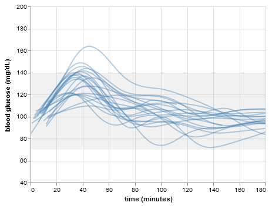

Fasting glucose and A1C tests done over the past few years show me at low risk for diabetes. But these tests don’t necessarily capture how much blood sugar “spikes” after meals–something that may be a better predictor of disease risk. Such blood sugar spikes can be minimized with a suitable diet, but what that diet should consist of differs from person to person. Fortunately, measuring your blood sugar levels is now relatively affordable and hassle-free with the latest generation of continuous glucose monitoring devices.
What I did
At my last physical exam, I asked for a prescription for a FreeStyle Libre. The setup consists of a reader device, and disposable sensors that last two weeks each. The reader device can also process blood test strips, so I got a few of those as well (along with some lancets) in order to double-check the accuracy of the sensors.

The sensors attach to the back of the upper arm using a spring-loaded, stamp-like device. I used my right arm, as my left arm was already in use for two other experiments… There’s a ~5mm long needle at the bottom of each sensor that ends up just under your skin.
For four weeks I tried to follow a normal life, eating and doing the things I normally do, with a few small variations, and while keeping an eye open for problematic blood sugar levels (i.e. outside of the 70-140mg/dL range).
I scanned the sensor with the reader before breakfast, lunch and dinner every day, as well as just before going to bed and right after getting up (as the sensor starts overwriting data after just 8 hours). Also in between sometimes, out of curiosity…
The official desktop and web apps generate nice reports for physicians, and can export your data as a spreadsheet, but transfering data from the reader with Tidepool was less flaky, plus their mobile app let me describe meals better (i.e. not just mark meal times), and they’re very quick to resolve any issues you run into.

Tidepool does a good job visualizing the data, but I wanted to have each day ligned up, with hourly step counts from my old Fitbit One to indicate activity levels and sleep times. So I exported my data from Tidepool and created this chart with Altair in a Jupyter Notebook:

To compare glycemic responses across meals, I extracted and overlaid data in charts like this one comparing several breakfasts:

I also kept a record of my days using the Google Maps Timeline, including photos of all most of my meals, in case I needed to check what I was doing at any given time, or where I ate that pizza…
During the four weeks, there was no significant change in body weight or composition, resting heart rate or blood pressure, sleep duration, or activity levels.
What I learned
The sensors worked as advertised, and didn’t cause any pain or skin issues, or come off prematurely. The local swimming pool was closed for the duration of the experiment, so the only exposure to water were brief showers once a day or so. If I were spending more time in the water, or exposing my upper arms to the sun, I’d consider covering the sensor with something like SIMPATCH tape.
The data appears to be reasonably accurate: The values shown when scanning the sensor were often way off, but the measurements that are logged with a lag every 15 minutes or so seem plausible, and match the few finger prick tests I did, at least when blood sugar levels were stable. Had planned to do a more finger prick tests, but getting enough blood turned out to be difficult (without wider lancets, which most pharmacies don’t stock).
During moderate exercise like walking, blood sugar levels remained stable almost regardless of what I ate. During prolonged (>2h), intense exercise without food there were some ups and downs; this could be the liver dumping glucose back into the blood, or an artifact caused by changing hydration levels. Brief periods of intense exercise didn’t affect blood sugar levels much, but greatly reduced the glycemic response for up to an hour after exercising. There was no correlation between the amount of exercise on a day and the average blood sugar levels during the following day. Standing rather than sitting didn’t have an obvious effect on blood sugar levels.
Didn’t do any real fasting, but noticed that blood sugar remained stable when I hadn’t eaten for a while, even after skipping a meal. What I had always assumed to be a feeling of low blood sugar was in fact just me being hungry.
Breakfast was the least problematic meal of the day. I was surprised to see a stronger glycemic response from plain oatmeal than from a smoothie bowl with granola, or even french toast smothered in apple sauce or maple syrup. Neither drinking green tea with breakfast nor substituting full- with low-fat dairy or non-dairy made a noticable difference. Adding whey protein to the smoothie made my blood sugar levels stay elevated longer.
Lunch was mostly unproblematic, perhaps because I usually eat out and am on foot. But if I overate, blood sugar levels could remain elevated almost until dinner. Overeating at dinner was even more problematic, especially when eating late, with blood sugar levels sometimes remaining elevated into the early morning. White rice and regular pasta may be problematic, while potatoes and bread of any kind were fine. Substituting regular pasta with chickpea pasta improved things, but only slightly.
Chocolate, nuts, ice cream, and fruits appear to be unproblematic snacks. Cookies and cakes were fine, too, when consumed in moderation. The one snack that did produce a huge spike was a piece of mochi, a kind of rice-cake filled with bean paste.
Milkshakes posed no problem after intense, half hour workouts in the evening. But if I drank a milkshake in the evening without prior exercise, I’d end up going to bed with elevated blood sugar levels. Drinking the milkshake while still at the gym, or half an hour later when back home made no obvious difference.
Herbal teas (chamomile, fennel) didn’t have any immediate, obvious effect on blood sugar levels.
Lack of sleep made my glycemic responses less effective, especially in the morning. Since I wasn’t keeping track of sleep quality, just duration, I can’t say if high or low blood sugar levels affected my sleep in some subtle way.
Finally, stress, especially after meals, and when combined with inactivity, was a (fortunately rare) cause of prolonged, elevated blood sugar levels.
What next
I intend to do another round of blood sugar tracking in a year or so–or earlier, if my daily routine changes significantly. I’ll also be sharing more detailed results at the next Quantified Self Seattle Meetup.